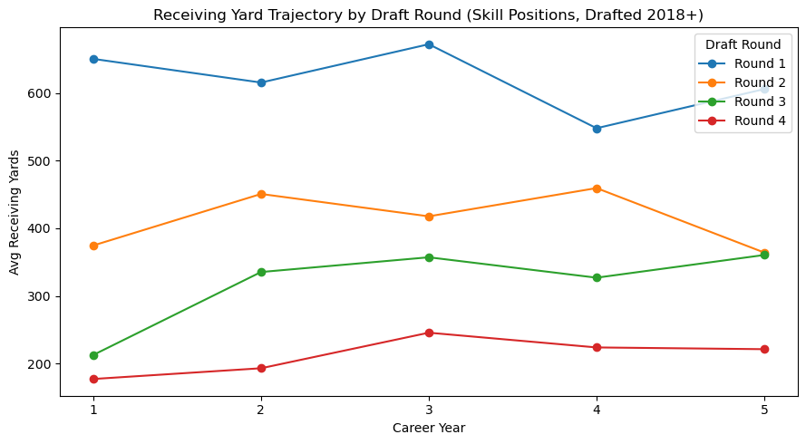
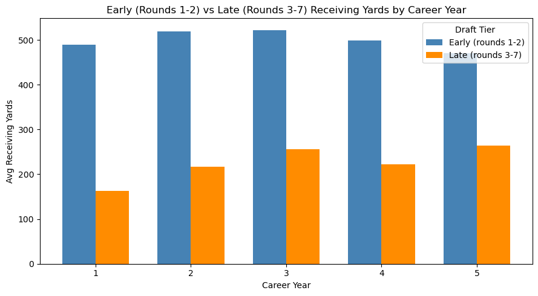

← All projects
Data Analysis · Final project
NFL Draft Career Trajectories
Do later-round picks catch up? Tracking how running backs, receivers, and tight ends develop over their first five NFL seasons, split by draft round.
The question
How does on-field production change across the first five seasons of a skill-position player's NFL career, and does draft round predict how quickly a player develops, not just how much they produce?
Teams justify high picks as a bet on long-term potential. If first-round picks produce more in year one but later picks close the gap by year three or four, teams may be paying for early production more than true career value. I expected first-round picks to dominate early, with the gap narrowing a lot by year three.
Data
Three datasets from the nflverse project (Pro Football Reference data), joined on player ID:
- draft_picks: every pick since 1980, with round, pick, and position.
- advstats: season-level rushing and receiving stats, 2018 to present.
- combine: measurables like the 40-yard dash, weight, and vertical jump.
No single table could answer the question. The draft table gives round, the stats table gives yearly production, and the combine table lets me test whether physical traits explain any of the development gap.
Process
- Logged known data issues (missing IDs, inconsistent position codes, implausible weights) and documented a decision for each.
- Standardized 26 raw position codes into position groups, and set combine weights outside 150–400 lbs to null.
- Built a derived
career_yearvariable (stat season minus draft season, plus one) so every player is measured on the same timeline. - Loaded clean tables into SQLite and audited every join for cardinality and unmatched records before and after joining.
- Compared production by round and by early versus late picks, computed year-over-year change, and split players by combine speed.
Findings

- The gap narrows, but less than I expected. Round 1 players averaged 650.7 receiving yards in year one versus 212.6 for round 3. By year three it was 672.4 versus 357.1, so the gap shrank from 438 to 315 yards.
- Round 2 develops most steadily. Round 2 players rose from 374.6 yards in year one to 450.8 in year two, while round 1 players dipped before recovering in year three.
- Speed predicts early production more than development. Players with sub-4.50 forty times out-gained slower players by about 129 yards in year one. By year three that edge was down to about 90.

| Career year | Rounds 1–2 (avg yds) | Rounds 3–7 (avg yds) | Gap |
|---|---|---|---|
| Year 1 | 489.3 | 162.4 | 326.9 |
| Year 2 | 519.5 | 216.6 | 302.9 |
| Year 3 | 522.1 | 256.3 | 265.8 |
| Year 4 | 498.1 | 222.4 | 275.7 |
| Year 5 | 470.1 | 263.9 | 206.2 |
Limitations: stats only go back to 2018, so few players have five full seasons. Survival bias also matters: late-round picks still in the league by year three are the best of their tier, which makes the gap look like it closes more than it does for a typical late pick.